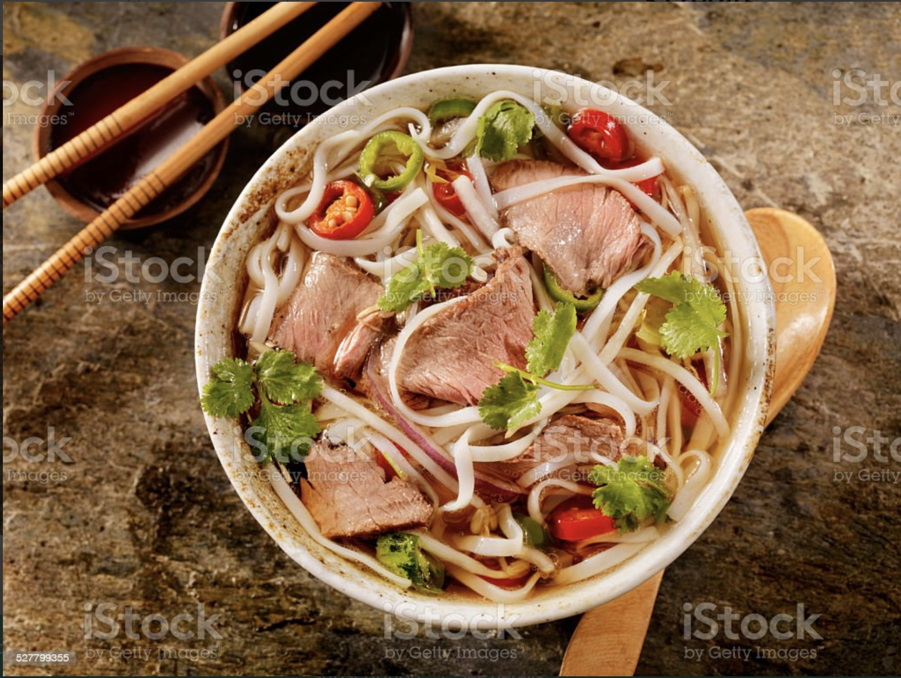

Traditional Pho

Description
This is a recipe for a traditional Pho dish
Ingredients
Pho Broth
- 10 lbs beef bones
- 2 medium yellow onions
- 2 whole heads garlic
- 4 (2-inch pieces) ginger (sliced lengthwise)
- 6 whole star anise
- 12 whole cloves
- 2 black cardamom pods
- 2 whole cinnamon sticks
- 2 tablespoons fennel seeds
- 2 tablespoons coriander seeds
- 2/3 cup fish sauce
- 4 tablespoons sugar
Assembly
- 1 pound flat rice noodles (dried or fresh)
- 1 pound beef (flank steak, chuck roast, brisket, sirloin(sliced thin against the grain))
- sliced red or white onions
- fresh cilantro (chopped)
For the Table
- fresh mint, Thai basil
- mung bean sprouts
- green onions ((scallions))
- sliced jalapeño
- lime wedges
- 1thinly sliced red chilis
Steps
Authentic Pho Broth (8+ hours)
- Blanch the bones. This step is SO IMPORTANT. If you want a clear, beautiful pho broth, blanch your bones. Do this by dividing the bones between two large pots or stockpots. Cover with cold water. Bring to a boil over high heat and simmer for 15-20 minutes. Drain and rinse the bones with water.
- Roast the bones and the vegetables (optional). Preheat the oven to 450 degrees F. Transfer the bones, onion, garlic, and ginger to the roasting pans or rimmed baking sheets (you'll probably need two). Don’t pile them all on top of each other. Roast for 30 minutes before gently tossing the bones, and roasting for an additional 15-30 minutes more (for a total of 45-60 minutes).
- Toast the spices. As the bones are roasting, add all of your spices (the star anise, cinnamon, cloves, cardamom pods, coriander seeds, and fennel seeds) to a large, dry skillet over low heat. Toast the spices, stirring often to prevent burning, until fragrant, approximately 5 minutes. Divide the spices in half. Cut cheesecloth into two small square pieces (approximately 5-inches by 5-inches) each. Transfer the divided spices to the center of each square. Gather at the top and secure with kitchen twine.
- Transfer the roasted bones and veggies back to the stockpots. Making sure to wash the pots after the bones were blanched and drained. Transfer and divide the roasted bones, onion, garlic, and ginger back to the stockpots. Scrape up any remaining bits and juices left in the roasting pan using a metal spatula and a little water, if needed. Add to the pot with the bones (don’t worry, all those brown bits are FLAVOR!).
- Bring to a boil. With the bones, spice sachets (one per pot), onion, garlic, and ginger divided between the two pots, fill each pot with approximately 12 cups water (or until bones are fully submerged), 1/3 cup fish sauce and 2 tablespoons of sugar. Bring to a boil.
- Simmer the bones. Immediately reduce heat to low and simmer, with the lid slightly ajar, skimming any foam or excess fat, occasionally (if you blanched your bones, you shouldn’t see much foam). Simmer for at least 6-12 hours, ideally 24 hours (do not leave the stove running overnight. Simply cool and store in the refrigerator and continue to simmer the next day). Add more water if needed to make sure the bones stay submerged.
- Strain the broth. Once the bones have simmered and your hot broth is ready, strain it through a fine-mesh strainer or colander into a clean pot. This separates the pretty, clear broth from the bones and spices.
- Season to taste. Add additional salt (you'll probably need a little), soy sauce, fish sauce, sugar or rock sugar (found at Asian markets), to taste. Set aside the broth to cool (if you're not using right away) and reserve the bones.
- Don’t forget about the meat. I can almost guarantee that there is a TON of delicious meat waiting to be picked from the bones. Don’t let it go to waste! Discard the meat-free bones, herbs, and other bits that were used to make the broth, but save the meat and add to sandwiches, wraps, salads, or back to your broth.
- Skim the fat from the top (optional). Add a couple of handfuls of ice to your broth to expedite cooling and cover your pot with a lid. Transfer the broth to the refrigerator and allow the broth to cool fully (this will take upwards of 6 hours or overnight). The result will be a hard, thick layer of fat on the top and a bottom layer that is your pho broth (which should look like gelatinous brown jello). If desired use a fork to scoop off the top layer of fat.
Non-Authentic Pho Broth (20-30 minutes)
- Cook the mirepoix. To a medium stockpot over medium heat, add the olive oil and shallots. Cook the shallots for approximately 5 minutes, stirring often. Add the white parts of a few green onions, the minced garlic, and ginger. Stir well to combine and cook for 1-2 more minutes.
- Add pre-made broth or stock. Add your favorite store-bought broth or stock to the pot and bring to a simmer.
- Add some flavor. Add 1-2 whole star anise, soy sauce, and fish sauce to the broth. Cover. Simmer for 15-20 minutes.
- Remove the star anise. Try not to forget this part.
- Season to taste. When it comes to Pho, you do you. Add more salt, more sugar, more fish sauce, etc.
Assembly
- Slice your meat. Thinly slice your meat. If you're having trouble, place it in the freezer for 10 minutes which will make it easier to slice.
- Noodles first. Grab a large bowl and divide the pre-cooked noodles between bowls.
- Add the raw meat. Yes, you guys. RAW. Add the meat directly on top of the rice noodles. Don’t worry, assuming your broth is boiling hot and not just warm, your meat will get fully cooked.
- Add the broth. It doesn’t matter which broth (the fast or the slow method), this is the moment. Just make sure it’s super hot and ladle directly over the meat.
- Garnish like crazy. Add some extra cooked beef from the bones you used to make the bone broth, add one sauce…or five. Guys, it’s up to you! Have fun!